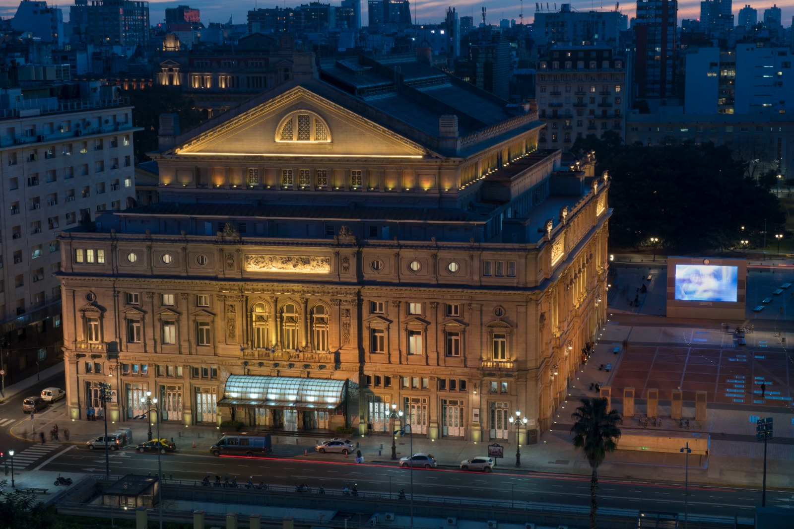

Opened in 1908 after 20 years of construction.
Explore Teatro Colón

Ranked as one of the best opera houses in the world for its acoustics and stunning architecture.
Its horseshoe shape is designed for perfect acoustic diffraction—some say it’s the most 'honest' stage in the world because you can't hide a single flat note.
The building is a "Stylistic Hybrid"—the base is German (solid), the middle is French (fancy), and the top is Italian (artistic).
The "Flaw" of Perfection
Italian tenor Luciano Pavarotti once joked that the theatre had a major flaw: its acoustics were too perfect. He noted that if a singer made even a tiny mistake, it was immediately noticeable to everyone in the room. This clarity is due to the horseshoe shape, which distributes sound evenly, and the specific mix of materials: wood and fabric on the lower levels to absorb sound, and hard marble on the upper levels to create reverberation.
A "Cool" Secret History
The original version of the theatre (which opened in 1857) had a peculiar early form of "air conditioning." Beneath the floorboards of the audience seating, there was a massive chamber designed to hold huge blocks of ice shipped up from southern Argentina. This kept the socialites cool and even allowed the theatre to be the first place in the region to serve ice cream.
Built on a Train Station
The current building sits on the site of what was once Park Station, Argentina’s very first railway station. Construction on the current theatre took 20 years (1889–1908) and was plagued by drama: the first two lead architects died before it was finished, and the project survived financial crises and even an anarchist bombing in 1910.
What to Expect
Italian marble, French stained glass, and acoustics so perfect that even a whisper on stage can be heard in the back row.